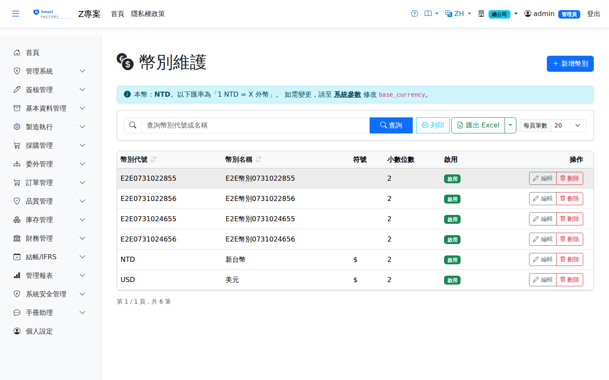

幣別主檔Currency Master
路由：/BAS/Currency | 幣別定義與每日匯率維護Route: /BAS/Currency | Currency definitions and daily exchange rates
幣別主檔定義系統中使用的各幣別代碼，並維護每日買入/賣出匯率。採購單、銷售訂單的外幣金額換算均依此匯率計算。The currency master defines the currency codes used in the system and holds the daily buy and sell rates. Foreign-currency amounts on purchase orders and sales orders are converted with these rates.

幣別畫面截圖（示意，實際欄位/資料依權限與查詢條件而異）Currency screenshot (illustrative; actual fields and data vary by permission and query criteria)
匯率方向：Exchange rate direction:本系統匯率方向為 The exchange rate direction of this system is 本位幣 ÷ 外幣local currency ÷ foreign currency（乘法換算）。 (multiply to convert).
例：1 USD = 32.5 TWD，則 USD 的買入匯率填 32.5，本位幣金額 = 外幣金額 × 匯率。Example: 1 USD = 32.5 TWD, so enter 32.5 as the buy rate for USD; local amount = foreign amount × rate.
例：1 USD = 32.5 TWD，則 USD 的買入匯率填 32.5，本位幣金額 = 外幣金額 × 匯率。Example: 1 USD = 32.5 TWD, so enter 32.5 as the buy rate for USD; local amount = foreign amount × rate.
欄位說明Field reference
| 欄位名稱Field | 必填Required | 說明Guide |
|---|---|---|
| 幣別代碼Currency Code | 必填Required | 3 碼 ISO 幣別代碼（例：TWD、USD、EUR）3-letter ISO currency code (e.g. TWD, USD, EUR) |
| 幣別名稱Currency Name | 必填Required | 完整名稱（例：新台幣、美元）Full name (e.g. New Taiwan Dollar, US Dollar) |
| 小數位數Decimal Places | 必填Required | 金額允許的小數位數，建議依各幣別國際慣例設定（TWD=0、USD=2）Decimal places allowed for amounts; follow the international convention of each currency (TWD = 0, USD = 2) |
| 是否啟用Active | 停用後無法在新單據中選取該幣別Once inactive, this currency cannot be selected on new documents |
匯率維護Maintaining exchange rates
編輯幣別後，切換至「匯率」分頁可查看及新增每日匯率記錄。After opening a currency, switch to the "Exchange Rate" tab to view and add daily rates.
| 欄位名稱Field | 必填Required | 說明Guide |
|---|---|---|
| 日期Date | 必填Required | 匯率適用日期（格式：YYYY-MM-DD）Date the rate applies to (format: YYYY-MM-DD) |
| 買入匯率Buy Rate | 必填Required | 本位幣購入外幣的匯率（本位幣/外幣）Rate for buying foreign currency with local currency (local/foreign) |
| 賣出匯率Sell Rate | 必填Required | 本位幣賣出換取外幣的匯率Rate for selling local currency to obtain foreign currency |
新增每日匯率步驟Adding a daily rate
1
在幣別列表中點擊要維護的幣別，開啟編輯側欄。Click the currency you want to maintain in the list to open the edit panel.
2
切換至「匯率」分頁，點擊「新增匯率」。Switch to the "Exchange Rate" tab and click "Add Rate".
3
輸入日期、買入匯率、賣出匯率後，點「儲存」。Enter the date, buy rate and sell rate, then click "Save".
4
點擊匯率列右側「刪除」可移除該日匯率。Click "Delete" at the right of a rate row to remove that day's rate.
操作步驟Steps
新增幣別Add Currency
1
進入「基本資料 > 幣別主檔」，點「新增」。Go to "Basic Data > Currency Master" and click "Add".
2
填入幣別代碼、名稱、小數位數後點「儲存」。Enter the currency code, name and decimal places, then click "Save".
3
儲存後在列表找到新幣別，點擊開啟並切換至「匯率」分頁維護匯率。After saving, find the new currency in the list, open it and switch to the "Exchange Rate" tab to maintain rates.
本位幣（TWD）無需設定匯率，其他外幣需至少設定一筆匯率才能在採購/銷售單中帶入換算金額。若當日無匯率，系統會自動使用最近一筆有效匯率。The local currency (TWD) needs no rate; every other currency needs at least one rate before converted amounts appear on purchase and sales documents. If there is no rate for the day, the system uses the most recent valid rate.
注意：Note:小數位數設定後，若已有採購/銷售交易資料則不建議修改，可能影響金額顯示精度。 Changing the decimal places is not recommended once purchase or sales transactions exist, as it may affect the display precision of amounts.